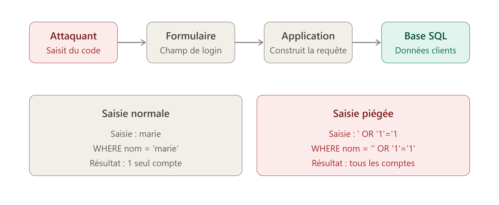

Un site web stocke ses données (comptes, mots de passe) dans une base de données
qu'il interroge avec des requêtes SQL.
Si le site colle directement ce que
l'utilisateur tape dans la requête sans le vérifier, un attaquant peut y glisser
ses propres instructions SQL.
La base de données les exécute sans faire la différence.

Exemple de code vulnérable :
SELECT * FROM users WHERE nom = 'marie'
Si l'attaquant tape ' OR '1'='1 dans le champ, la requête devient :
SELECT * FROM users WHERE nom = '' OR '1'='1'
La condition '1'='1' est toujours vraie, donc la base renvoie tous les comptes au lieu d'un seul.
En 2015, l'opérateur britannique TalkTalk a été victime d'une injection SQL. Les données personnelles de plusieurs centaines de milliers de clients ont été exposées. L'entreprise a reçu une amende de 400 000 £ et plusieurs adolescents ont été arrêtés, ce qui montre qu'une telle attaque ne demande pas de gros moyens.
Réalisé par Ewan Royer, SIO 1